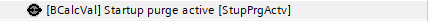
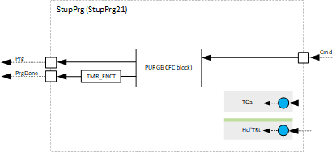
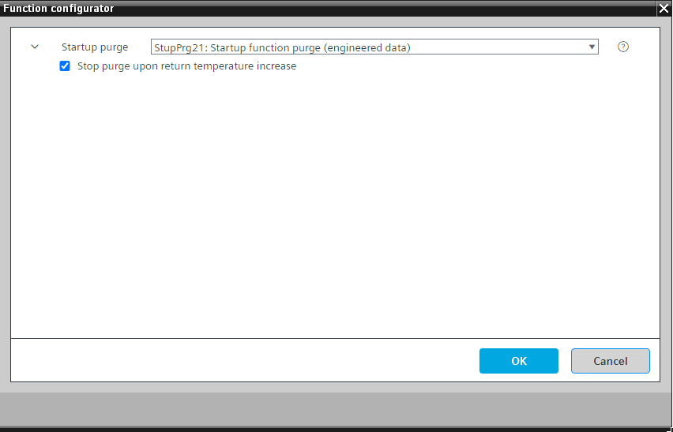

[StupPrg21] 启动功能清除
Program block, name / node subtype: [StupPrg21] Startup function purge
Library hierarchy: Ventilation and air conditioning functions
Family: StupPrg
项目树 | 图表 |
|---|---|
|
 |  |
Configurator


程序块存储在没有 I/Os. 的库中 使用auto-create and auto-connect函数创建 I/Os 和 /or 将它们连接到接口块，例如 R_A、CMD_B。或者，从包含库中预定义 I/Os 的文件夹中取出 I/Os，并从工厂中取出 /or，并将它们连接到接口块。
它通常用于空气处理机组。当工厂在寒冷的室外条件下启动时，它可以防止预热器防冻保护响应，并确保预热器中的水是温暖的。
通常，该函数是空气处理机组启动序列的第一个元素，并保持它直到该函数返回吹扫阶段完成的信号。
二进制计算值表明净化阶段已激活。
该程序块具有以下可选功能：
Option: Stop purge in case of return temperature increase
如果在吹扫阶段期间返回温度达到特定值，例如30°C，则在吹扫时间过去之前生成指示吹扫阶段完成的信号。
如果 TOa < PURGE.TOaLoLm 并且设备关闭时间长于 TiOffMin（通常为 15 分钟），则功能块 PURGE 仅用于激活净化功能。 PURGE.TiPrgMax 和 PURGE.TiPrgMin 可以相同，因为预热器中温水的时间仅取决于设备的水力（管道长度和连接类型）而不取决于外部温度。
姓名 | 描述 | 类型 | 报警/通知类 | 趋势/类型 | |
|---|---|---|---|---|---|
StupPrgActv | Startup purge active | BCalcVal: Binary calculated value | No | No | |
清除 | 清除 | N/A | N/A | N/A | |
描述 |
|---|
Stop purge upon return temperature increase |
如果 TOa < PURGE.TOaLoLmand 并且设备关闭时间长于 TiOffMin（通常为 15 分钟），则功能块 PURGE 仅用于激活净化功能。
PURGE.TiPrgMax 和 PURGE.TiPrgMin 可能相同，因为盘管中温水的时间仅取决于工厂的水力学（管道长度和连接类型），而不取决于外部温度。